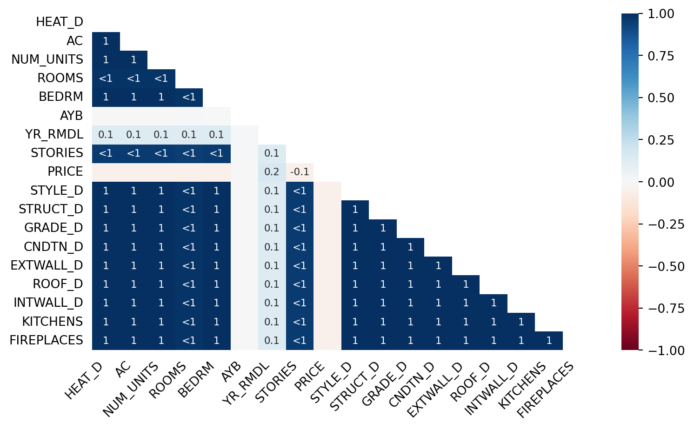
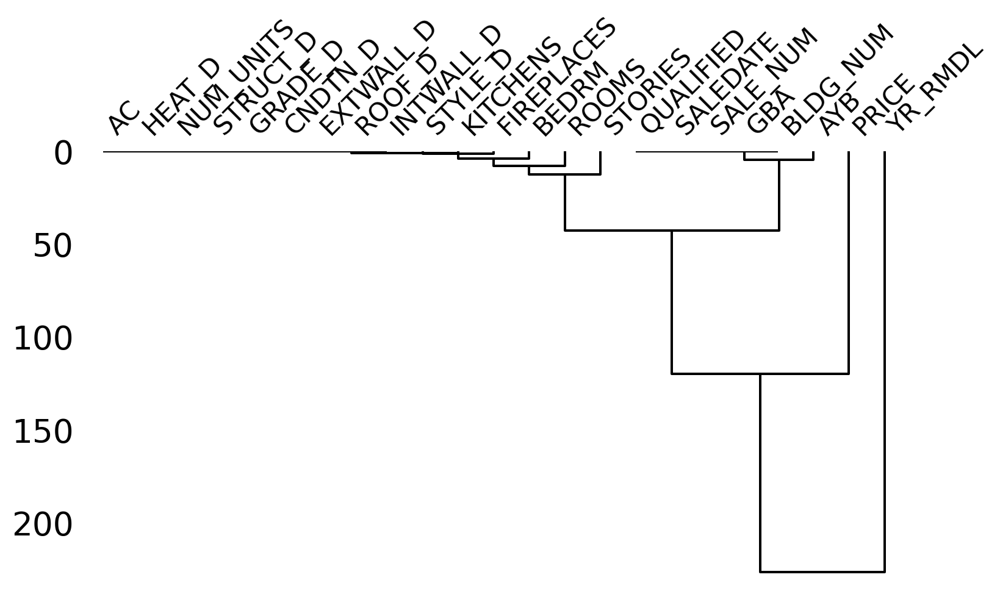

!pip install missingnoAnalyzing missing values in Python using missingno
Missingno is our Sherlock Holmes in the world of Python data analysis. It’s a library specifically designed to tackle one of the most common yet frustrating parts of data analysis – missing values. You know, those pesky NaNs that lurk in your datasets, often skewing your analyses or, worse, leading to erroneous conclusions.
- Simplicity: It’s user-friendly and integrates seamlessly with Pandas, making it a breeze to use right out of the box.
- Visual: Offers a range of visualizations - matrix plots, bar charts, heatmaps, and dendrograms - turning the bland task of missing data analysis into a visually engaging experience.
- Pattern Recognition: Helps you quickly spot patterns of missingness, which can be critical for understanding your data’s structure and quality.
Getting started
First, ensure you have missingno installed. If not, a quick pip install does the trick:
Load the libraries and the data
We will use a dataset of residential building characteristics collected and made public by the Washington DC government, called the Computer Assisted Mass Appraisal (CAMA) database. We also import the missingno package that we installed above.
import pandas as pd
import numpy as np
import missingno as msno
#####################
# Load your dataset
df = pd.read_csv('dc_tax_data.csv')
df=df[['SSL', 'BATHRM','HEAT_D', 'AC', 'NUM_UNITS',
'ROOMS', 'BEDRM', 'AYB', 'YR_RMDL', 'STORIES', 'SALEDATE',
'PRICE', 'QUALIFIED', 'SALE_NUM', 'GBA', 'BLDG_NUM', 'STYLE_D', 'STRUCT_D', 'GRADE_D',
'CNDTN_D', 'EXTWALL_D', 'ROOF_D', 'INTWALL_D', 'KITCHENS',
'FIREPLACES']]Visualizing missing values
missingno offers visualizations for two main purposes - reporting missing rows and columns, and checking the relation of missing values among columns. Let’s begin by checking out the first type.
1. Matrix
The following code helps us visualize the missing values in a matrix. Note that you can set the figure size and fontsize parameters as you wish:
msno.matrix(df, figsize=(10,5), fontsize=10)<AxesSubplot:>Matrix of missing values
This plot shows us the pattern of missingness across columns. White lines indicate missing values. A quick glance can tell you if there’s a pattern or if the missingness is random. As we see above, the YR_RMDL (year in which building was remodeled) column has the most missing values, followed by the PRICE column.
Note - As will become clearer in the subsequent examples, looking at visuals will not be meaningful beyond 50 columns.
2. Barplot.
The Bar chart is a quick-check tool to see how many non-missing values we have per column.
msno.bar(df, figsize=(9, 4), fontsize=10)<AxesSubplot:>Barplot of missing non-missing values

3. Heatmap
The missingno heatmap is a tool for exploring the relationship between missing values in different variables within a dataset. This heatmap focuses on nullity correlation, which essentially tells us how the presence or absence of one variable impacts another. The algorithm behind this heatmap filters out variables that don’t significantly contribute to the analysis. This means variables that are consistently non-null or always null are excluded because they don’t provide useful correlation information.
Entries marked <1 or >-1 hint at near-perfect negative or positive relationships with a few exceptions. These exceptions are important as they might indicate irregularities or errors in the data.
df2=df.iloc[:, 2:28]
msno.heatmap(df2, figsize=(9, 5), fontsize=10)<AxesSubplot:>Heatmap - Missing value correlations

4. Dendrogram
The dendrogram in missingno offers a more comprehensive view of variable completion correlations, going beyond the pairwise analysis seen in the correlation heatmap. It employs a hierarchical clustering algorithm from the SciPy library to assess variables against each other based on their nullity correlation. This is done by evaluating binary distance, where the algorithm iteratively groups variables in a way that minimizes the distance within these clusters. A key aspect of this process is that variables with similar patterns of missingness are clustered together. When you look at a dendrogram, you’re essentially reading a story of variable correlation from the top down. Points where cluster leaves join at zero indicate a perfect prediction of one variable’s presence by another’s. This could mean scenarios where one variable is always empty when another is filled, or they might consistently mirror each other’s state (both being empty or filled).
For instance, in a specific dataset, the dendrogram might cluster together variables that are mandatory and therefore always present. Leaves that are close but not exactly at zero suggest a strong, albeit not perfect, correlation. Such nuances are crucial for data analysts, as they highlight potential mismatches or anomalies in the dataset. If, according to your understanding of the data, certain columns should match in their presence or absence, the dendrogram can quantify the extent of mismatches. This insight could inform decisions on how many values need to be adjusted to align with expected patterns.
# Dendrogram
msno.dendrogram(df2, figsize=(9, 5))<AxesSubplot:>Dendrogram of missing values

The diagram suggests that “PLACES”, “BEDRM”, “ROOMS”, and “STORIES” have very similar patterns of missingness, hence they are clustered closely together. “AYB” and “YR_RMDL” merge at a higher point than “PLACES”, “BEDRM”, “ROOMS”, and “STORIES”, suggesting that “AYB” and “YR_RMDL” are less similarly missing compared to the other cluster.
Where clusters join together at the very bottom, it could suggest that the presence or absence of one variable is a good predictor for the presence or absence of the other within the same cluster.
Limitations:
The simplicity of this package is a double-edged sword. There is limited flexibility and customization. Moreover, the official documentation notes that datasets with more than 50 variables are difficult to visualize. Moreover, if you have a large number of variables, visual checks of missingness patterns are probably insufficient, and you should use statistical techniques to check patterns.
Conclusion
In machine learning applications, missing values might seem like an irritation to be disposed of quickly. Our ultimate goal is to reach a missingno matrix like this:
df2 = df2.dropna()
msno.matrix(df2, figsize=(8, 4), fontsize=10)<AxesSubplot:>Matrix - no null values
But exercise caution and patience!
Dropping or imputing missing values willy-nilly without examining the co-occurrence pattern among variables may introduce subtle, damaging biases into the dataset. However, the lean and efficient missingno library will hopefully let you diagnose the missing patterns in seconds.
Happy coding!
References:
https://github.com/ResidentMario/missingno
https://opendata.dc.gov/datasets/DCGIS::computer-assisted-mass-appraisal-residential/about